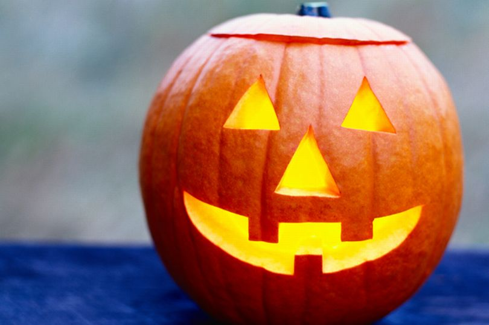

How To Carve A Pumpkin

First time carving a pumpkin? Or do you need a refresher? If either of those are true you’ve come to the right place. In this article, we will be covering the basics of pumpkin carving and, by the end, you should have a newfound confidence in your abilities to carve the classic pumpkin design(as shown above).
Before we get to carving the pumpkin you should double-check your supplies. The basic supplies needed to successfully carve a pumpkin is:
- A pumpkin
- A marker
- A ruler
- Two medium-sized bowls
- A candle (LED or real)
- A pumpkin carving kit, if you don't have one you can buy it here or, as an alternative, you could use a relatively sharp serrated knife and a large spoon
Now that you’ve double-checked your supplies you are ready to prepare your pumpkin for carving. The subsequent steps outline how exactly you do that:
- Take your sharpie and draw a relatively large circle around the stem of your pumpkin.
- Draw the triangular eyes and nose, using your marker and ruler, on whatever side of your pumpkin that’s the smoothest.
- Draw the mouth as shown below.
Now that we have successfully prepared our pumpkin it is time to move on to the most fun part of carving a pumpkin: actually carving the pumpkin! The following steps will explain how exactly you do that:
- Using the drawing we made around the stem as a guide take your chosen knife and start to cut it out. When you have finished cutting it out, put the chunk off to the side as we will be using it later.
- Take your scooper/large spoon and begin to scoop out all the pumpkins insides into one of your bowls.
- Grab your knife again and carve out the face you drew in the previous assignment. Take the carving slow and steady as this is the most important part of your pumpkin. When you finish cutting out a section place that pumpkin chunk in your other bowl.
If you’ve gotten here that means that you have successfully carved your pumpkin, congrats! That being said, your pumpkin still isn’t quite finished, there are a couple of things that still have to be done. Those things will be explained in the following list:
- Turn on your candle if you’re using an LED one, if you are using a real candle don’t light it yet.
- Place your candle inside the hole at the top of your pumpkin.
- Light your candle.
- Take the top chunk of pumpkin that you put off to the side in the previous section and put it back in the hole on the top of your pumpkin.
Your pumpkin is now complete!
In this article we covered the supplies you need to carve a pumpkin, how to prepare your pumpkin for carving and carving the pumpkin. If you want to try carving more complex designs a great website to check out for templates is "Better Homes & Gardens".